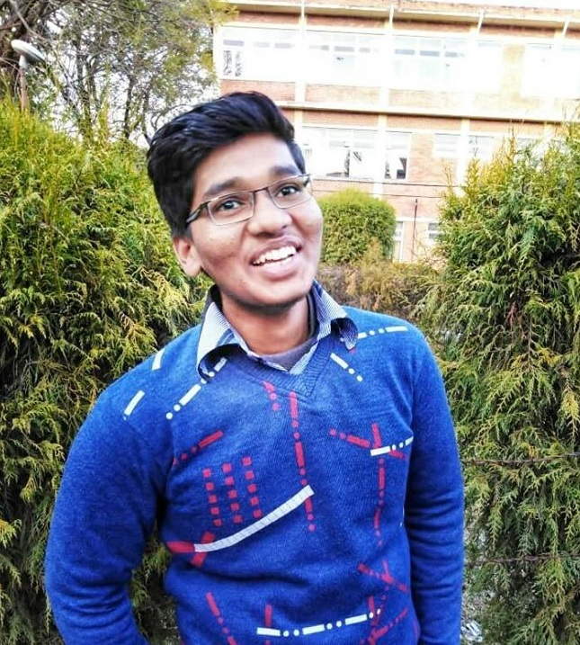

As President and Chief Executive Officer of Rome Dharni Hospital, it is my pleasure to welcome you on behalf of the 250 dedicated physicians and 1,000 healthcare professionals who work together to provide essential health care services to help you achieve optimum long-term health.
From primary and specialty care to long-term care, Rome Memorial Hospital delivers compassionate medical care for every stage of life. Through Rome’s continuum of healthcare services and its affiliation with St. Joseph’s Health, families have access to high-quality, patient-centered care that is coordinated and conveniently located close to home.
As a community hospital, we feel a deep sense of pride and commitment to all those who place their trust in our care. Our primary focus is to deliver exceptional care that exceeds national standards in quality, safety and patient satisfaction.
For example, each year, our excellent team of nurses and obstetrician/gynecologists welcome nearly 600 babies in our Maternity Department, which is ranked in the top 10 percent in the nation for patient satisfaction. They earn an A+ from patients because they’re experienced, knowledgeable and take the time to listen. The hospital earned the Blue Distinction Center+ for Maternity Care designation for delivering quality care safely and effectively.
With our specialized Senior Behavioral Health Unit and Residential Health Care Facility, the hospital has become a recognized leader in senior services. The hospital has earned special recognition as a NICHE (Nurses Improving Care for Healthsystem Elders) facility for providing compassionate connected care for older adult patients.
Ranked among the top 20 percent of skilled nursing facilities for three consecutive years, the Residential Health Care Facility also offers short-term rehabilitation services for patients that need a little extra care after a hospital stay to help them regain their strength, mobility and confidence.
